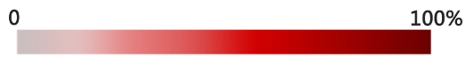
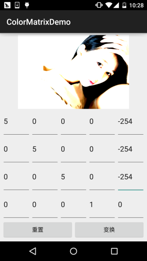

本節の導入：
前節ではMaskFilter（マスク）を学び、その2つのサブクラスBlurMaskFilterでぼかし効果を、EmbossMaskFilterでエンボス効果を作成しました。本節で学ぶのはもう1つのAPI——ColorFilter（色フィルター）ですが、MaskFilterと同様に、このクラスを直接使用するのではなく、このクラスの3つのサブクラスを使用します：
色行列カラーフィルター：ColorMatrixColorFilter
ライティングカラーフィルター：LightingColorFilter
混合カラーフィルターPorterDuffColorFilter
本節では最初のColorMatrixColorFilterの使い方を学びましょう。ColorMatrixColorFilterのドキュメントを開くと、
おおよそ次のような内容です：4 x 5の色行列を使用して色を変換し、ピクセルの彩度を変更したり、YUVをRGBに変換したりできます！そしてコンストラクタ内のColorMatrixが色行列であり、学習の核心でもあります。以下、順を追って説明します！

1.関連基礎知識の解説：
RGBAモデル：
RGBAを聞いたことがあるかどうかわかりませんが、赤・緑・青は知っていますよね？光の三原色です。RGBAはこれに透明度が加わったものです！R（Red赤色），G（Green緑色），B（Blue青色），A（アルファ透明度）また、絵の具の三原色と区別してくださいね。最も明確な違いは、絵の具の三原色では光の三原色の緑が黄色に置き換わることです！知っておく程度で十分です。興味があればご自身で百度で検索してください。
いくつかの用語：
- 色調/色相——物体が伝える色
- 彩度——色の純度で、0（グレー）から100%（飽和）で表される

- 輝度/明度——色の相対的な明暗の程度
2.ColorMatrixの解説
タイトルの通り、色行列（4×5）を使用します。行列の値を変更することで、白黒写真、黄ばんだ古い写真、高コントラストなどの効果を実現できます。色行列の解説図は以下の通りです：

上の図を理解できたでしょうか？もし高等数学を学んだことがあれば、これには慣れ親しんでいるはずです。要するに行列の乗算に過ぎません。学んだことがなくても大丈夫、計算方法は右下のものです。色行列の各行と、色行列の各成分の各列を掛けます。！
典型的な例として、処理前後の結果を比較します。また、ある色の値に定数を掛けることもできます。例えば3行目（青）を2倍すると、青みがかった効果になります。もちろん、上記の結果を検証するためにコードを書く必要があります！
3.コードを書いてColorMatrixの作用を検証する
ここではよくある例を書きます。ImageView1つ、4×5のEditText、リセットボタン1つ、生成ボタン1つを使って、効果図を見てみましょう：
順に、原画、黄ばみ、緑がかり、赤み、高コントラスト、色相変換、そして黄色レトロです。





次に、上記の効果を実現するコードを書きます：コード実装：
まずはレイアウトファイルactivity_main.xml：
<?xml version="1.0" encoding="utf-8"?>
<LinearLayout xmlns:android="http://schemas.android.com/apk/res/android"
android:layout_width="match_parent"
android:layout_height="match_parent"
android:orientation="vertical"
android:padding="5dp">
<ImageView
android:id="@+id/img_show"
android:layout_width="match_parent"
android:layout_height="0dp"
android:layout_weight="2" />
<GridLayout
android:id="@+id/gp_matrix"
android:layout_width="match_parent"
android:layout_height="0dp"
android:layout_weight="3"
android:columnCount="5"
android:rowCount="4"></GridLayout>
<LinearLayout
android:layout_width="match_parent"
android:layout_height="wrap_content"
android:orientation="horizontal">
<Button
android:id="@+id/btn_reset"
android:layout_width="0dp"
android:layout_height="wrap_content"
android:layout_weight="1"
android:text="重置" />
<Button
android:id="@+id/btn_Change"
android:layout_width="0dp"
android:layout_height="wrap_content"
android:layout_weight="1"
android:text="变换" />
</LinearLayout>
</LinearLayout>
次はMainActivity.java：
public class MainActivity extends AppCompatActivity implements View.OnClickListener {
private ImageView img_show;
private GridLayout gp_matrix;
private Button btn_reset;
private Button btn_Change;
private Bitmap mBitmap;
private int mEtWidth, mEtHeight;
private EditText[] mEts = new EditText[20];
private float[] mColorMatrix = new float[20];
private Context mContext;
@Override
protected void onCreate(Bundle savedInstanceState) {
super.onCreate(savedInstanceState);
setContentView(R.layout.activity_main);
mContext = MainActivity.this;
bindViews();
gp_matrix.post(new Runnable() {
@Override
public void run() {
mEtWidth = gp_matrix.getWidth() / 5;
mEtHeight = gp_matrix.getHeight() / 4;
//添加5 * 4个EditText
for (int i = 0; i < 20; i++) {
EditText editText = new EditText(mContext);
mEts[i] = editText;
gp_matrix.addView(editText, mEtWidth, mEtHeight);
}
initMatrix();
}
});
}
private void bindViews() {
img_show = (ImageView) findViewById(R.id.img_show);
gp_matrix = (GridLayout) findViewById(R.id.gp_matrix);
btn_reset = (Button) findViewById(R.id.btn_reset);
btn_Change = (Button) findViewById(R.id.btn_Change);
mBitmap = BitmapFactory.decodeResource(getResources(), R.mipmap.img_meizi);
img_show.setImageBitmap(mBitmap);
btn_reset.setOnClickListener(this);
btn_Change.setOnClickListener(this);
}
//定义一个初始化颜色矩阵的方法
private void initMatrix() {
for (int i = 0; i < 20; i++) {
if (i % 6 == 0) {
mEts[i].setText(String.valueOf(1));
} else {
mEts[i].setText(String.valueOf(0));
}
}
}
//定义一个获取矩阵值得方法
private void getMatrix() {
for (int i = 0; i < 20; i++) {
mColorMatrix[i] = Float.valueOf(mEts[i].getText().toString());
}
}
//根据颜色矩阵的值来处理图片
private void setImageMatrix() {
Bitmap bmp = Bitmap.createBitmap(mBitmap.getWidth(), mBitmap.getHeight(),
Bitmap.Config.ARGB_8888);
android.graphics.ColorMatrix colorMatrix = new android.graphics.ColorMatrix();
colorMatrix.set(mColorMatrix);
Canvas canvas = new Canvas(bmp);
Paint paint = new Paint(Paint.ANTI_ALIAS_FLAG);
paint.setColorFilter(new ColorMatrixColorFilter(colorMatrix));
canvas.drawBitmap(mBitmap, 0, 0, paint);
img_show.setImageBitmap(bmp);
}
@Override
public void onClick(View v) {
switch (v.getId()) {
case R.id.btn_Change:
getMatrix();
setImageMatrix();
break;
case R.id.btn_reset:
initMatrix();
getMatrix();
setImageMatrix();
break;
}
}
}
コードは非常に簡単です。レイアウトを読み込み、GridLayoutに5×4個のEditTextを入れます。ここでpost()メソッドを使うのは、GridLayoutの読み込みが完了してから幅と高さを取得することを保証するためです。そうしないと、GridLayoutの幅と高さを取得するときに値を取得できません。次に3つのメソッドを定義します：行列の初期化、行列値の取得、行列値に基づく画像処理です。とても簡単でしょう？
ただし、ここで少し疑問があるかもしれません。：
「画像を処理するには、このように色行列を変更するしかないのでしょうか？毎回こうするのは面倒ですし、行列に入力する値を誰が覚えられるでしょうか？もっと簡単に画像を処理する方法はありませんか？」
答：もちろんあります。ドキュメントを見返すと、いくつかの非常に一般的なメソッドが見つかります：setRotate(int axis, float degrees)：色相を設定
setSaturation(float sat)：彩度を設定
setScale(float rScale, float gScale, float bScale, float aScale)：輝度を設定
次に、この3つのメソッドを試す例を書いてみましょう！
4.ColorMatrixの3つのメソッドを使用して画像を処理する
実行結果図：

コード実装：
まず、画像処理用のユーティリティクラスを作成します。Bitmap、色相、彩度、輝度を渡すと、処理後に処理後の画像を返します：ImageHelper.java：
/**
* Created by Jay on 2015/10/28 0028.
*/
public class ImageHelper {
/**
* 该方法用来处理图像，根据色调，饱和度，亮度来调节
*
* @param bm:要处理的图像
* @param hue:色调
* @param saturation:饱和度
* @param lum:亮度
*
*/
public static Bitmap handleImageEffect(Bitmap bm, float hue, float saturation, float lum) {
Bitmap bmp = Bitmap.createBitmap(bm.getWidth(), bm.getHeight(), Bitmap.Config.ARGB_8888);
Canvas canvas = new Canvas(bmp);
Paint paint = new Paint(Paint.ANTI_ALIAS_FLAG);
ColorMatrix hueMatrix = new ColorMatrix();
hueMatrix.setRotate(0, hue); //0代表R，红色
hueMatrix.setRotate(1, hue); //1代表G，绿色
hueMatrix.setRotate(2, hue); //2代表B，蓝色
ColorMatrix saturationMatrix = new ColorMatrix();
saturationMatrix.setSaturation(saturation);
ColorMatrix lumMatrix = new ColorMatrix();
lumMatrix.setScale(lum, lum, lum, 1);
ColorMatrix imageMatrix = new ColorMatrix();
imageMatrix.postConcat(hueMatrix);
imageMatrix.postConcat(saturationMatrix);
imageMatrix.postConcat(lumMatrix);
paint.setColorFilter(new ColorMatrixColorFilter(imageMatrix));
canvas.drawBitmap(bm, 0, 0, paint);
return bmp;
}
}
次にレイアウトも作成します。activity_main.xml：
<?xml version="1.0" encoding="utf-8"?>
<RelativeLayout xmlns:android="http://schemas.android.com/apk/res/android"
android:layout_width="match_parent"
android:layout_height="match_parent"
android:orientation="vertical"
android:padding="5dp">
<ImageView
android:id="@+id/img_meizi"
android:layout_width="300dp"
android:layout_height="300dp"
android:layout_centerHorizontal="true"
android:layout_marginBottom="24dp"
android:layout_marginTop="24dp" />
<TextView
android:id="@+id/txt_hue"
android:layout_width="wrap_content"
android:layout_height="32dp"
android:layout_below="@id/img_meizi"
android:gravity="center"
android:text="色调 :"
android:textSize="18sp" />
<SeekBar
android:id="@+id/sb_hue"
android:layout_width="match_parent"
android:layout_height="32dp"
android:layout_below="@id/img_meizi"
android:layout_toRightOf="@id/txt_hue" />
<TextView
android:id="@+id/txt_saturation"
android:layout_width="wrap_content"
android:layout_height="32dp"
android:layout_below="@id/txt_hue"
android:gravity="center"
android:text="饱和度:"
android:textSize="18sp" />
<SeekBar
android:id="@+id/sb_saturation"
android:layout_width="match_parent"
android:layout_height="32dp"
android:layout_below="@id/sb_hue"
android:layout_toRightOf="@id/txt_saturation" />
<TextView
android:id="@+id/txt_lun"
android:layout_width="wrap_content"
android:layout_height="32dp"
android:layout_below="@id/txt_saturation"
android:gravity="center"
android:text="亮度 :"
android:textSize="18sp" />
<SeekBar
android:id="@+id/sb_lum"
android:layout_width="match_parent"
android:layout_height="32dp"
android:layout_below="@id/sb_saturation"
android:layout_toRightOf="@id/txt_lun" />
</RelativeLayout>
最後は私たちのMainActivity.java：
public class MainActivity extends AppCompatActivity implements SeekBar.OnSeekBarChangeListener{
private ImageView img_meizi;
private SeekBar sb_hue;
private SeekBar sb_saturation;
private SeekBar sb_lum;
private final static int MAX_VALUE = 255;
private final static int MID_VALUE = 127;
private float mHue = 0.0f;
private float mStauration = 1.0f;
private float mLum = 1.0f;
private Bitmap mBitmap;
@Override
protected void onCreate(Bundle savedInstanceState) {
super.onCreate(savedInstanceState);
setContentView(R.layout.activity_main);
mBitmap = BitmapFactory.decodeResource(getResources(), R.mipmap.img_meizi);
bindViews();
}
private void bindViews() {
img_meizi = (ImageView) findViewById(R.id.img_meizi);
sb_hue = (SeekBar) findViewById(R.id.sb_hue);
sb_saturation = (SeekBar) findViewById(R.id.sb_saturation);
sb_lum = (SeekBar) findViewById(R.id.sb_lum);
img_meizi.setImageBitmap(mBitmap);
sb_hue.setMax(MAX_VALUE);
sb_hue.setProgress(MID_VALUE);
sb_saturation.setMax(MAX_VALUE);
sb_saturation.setProgress(MID_VALUE);
sb_lum.setMax(MAX_VALUE);
sb_lum.setProgress(MID_VALUE);
sb_hue.setOnSeekBarChangeListener(this);
sb_saturation.setOnSeekBarChangeListener(this);
sb_lum.setOnSeekBarChangeListener(this);
}
@Override
public void onProgressChanged(SeekBar seekBar, int progress, boolean fromUser) {
switch (seekBar.getId()) {
case R.id.sb_hue:
mHue = (progress - MID_VALUE) * 1.0F / MID_VALUE * 180;
break;
case R.id.sb_saturation:
mStauration = progress * 1.0F / MID_VALUE;
break;
case R.id.sb_lum:
mLum = progress * 1.0F / MID_VALUE;
break;
}
img_meizi.setImageBitmap(ImageHelper.handleImageEffect(mBitmap, mHue, mStauration, mLum));
}
@Override
public void onStartTrackingTouch(SeekBar seekBar) {}
@Override
public void onStopTrackingTouch(SeekBar seekBar) {}
}
コードも同様に非常に簡単なので、説明は省略します。
5.本節のコード例のダウンロード：
本節のまとめ：
さて、本節ではColorFilterの最初のColorMatrixColorFilter色行列フィルターを紹介しました。実際の中核は依然としてColorMatrixであり、このクラスを使って画像を処理する際、自分で4×5行列の値を設定したり、ColorMatrixが提供する色相・彩度・輝度を設定するメソッドを直接呼び出したりできます。画像処理は結局このようなもので、もう1つはピクセル単位で変更する方法で、後で説明します。本節の内容は医生（徐宜生）氏の慕客網ビデオを参考にしています：Android画像処理-美図秀秀（Meitu）を創るのはここから始まる文字を読むのが面倒な人はビデオを見てください。解説はなかなか良いですよ。
クリックしてノートを共有
ノートは本記事の内容の拡張である必要があります！
記事投稿はこちらをクリック
登録招待コードの取得方法
ノートを共有する前に必ずログインしてください！
登録招待コードの取得方法